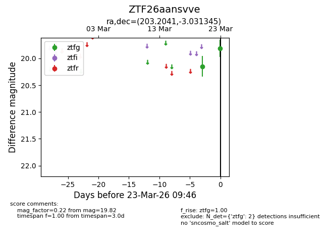
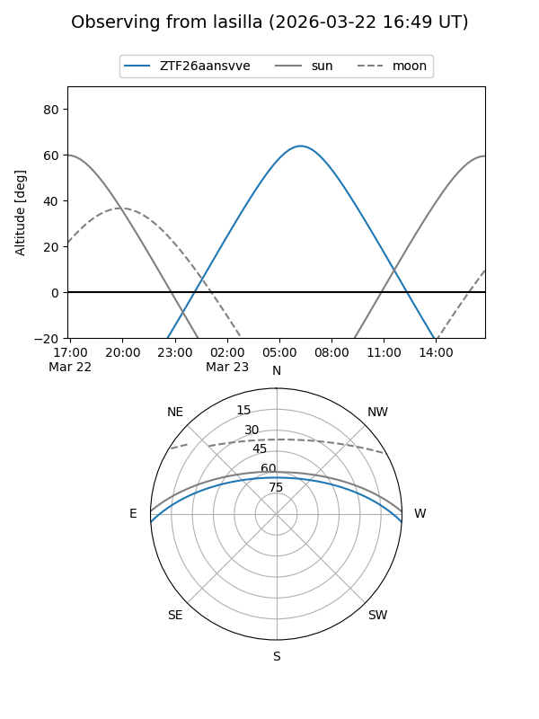
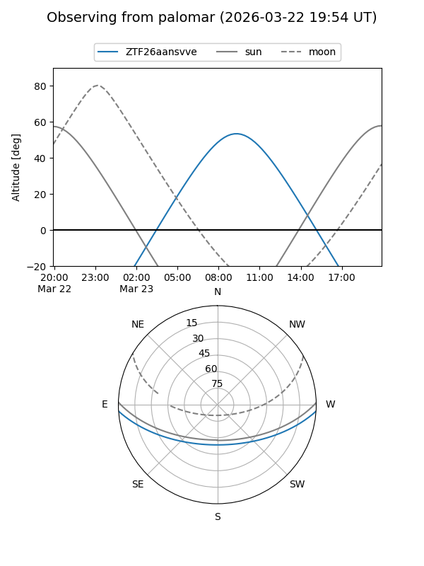

ZTF26aansvve
Target ZTF26aansvve at 2026-03-23 09:48
Aliases and brokers:
FINK: link
Lasair: link
ALeRCE: link
alt names
ZTF26aansvve (ztf,fink_ztf)
Coordinates:
equatorial (ra, dec) = 203.2041,-3.03134
equatorial (HMS+DMS) = 13:32:48.98,-03:01:52.84
galactic (l, b) = (322.8448,+58.23161)
Flags:
Photometry:
last ztfg=19.82
2 ztfg detections
Lightcurve

Visibility


Additional plots